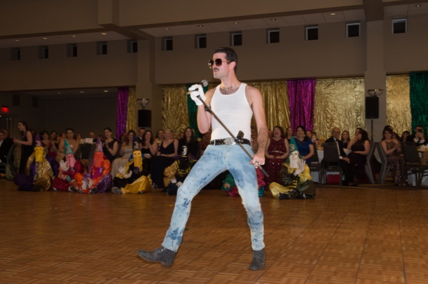
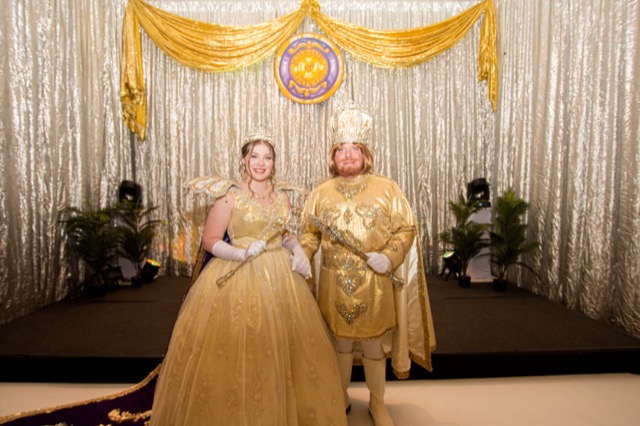
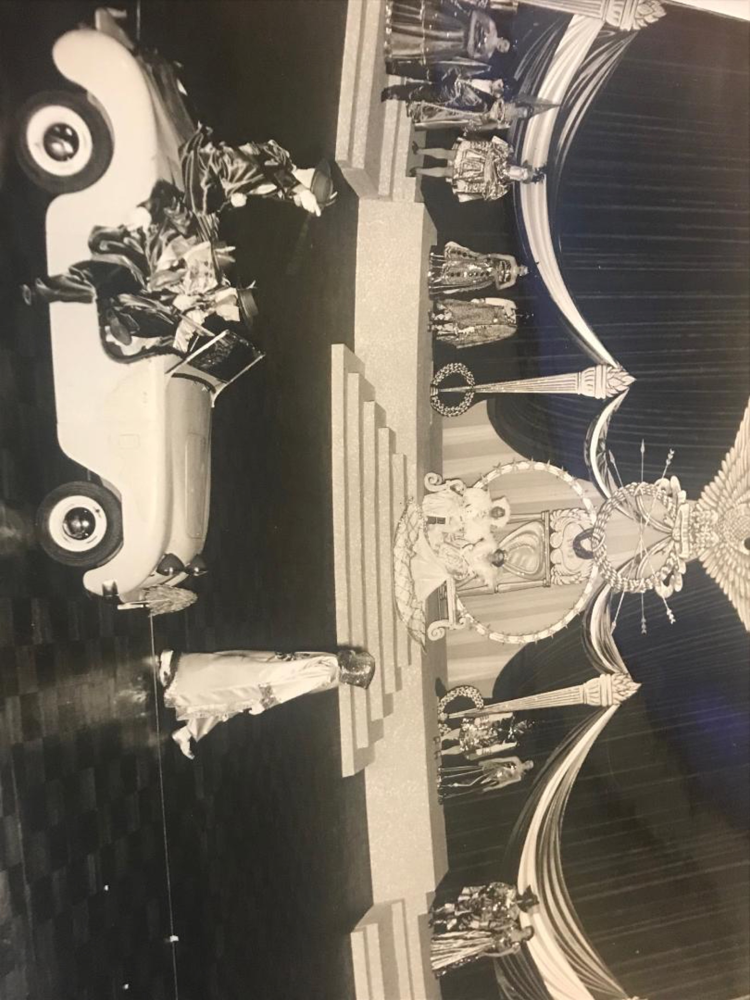
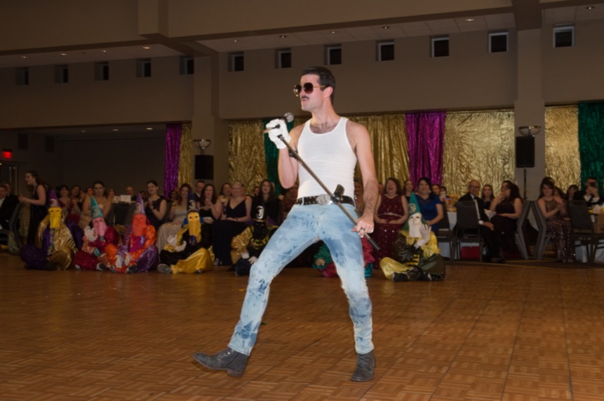
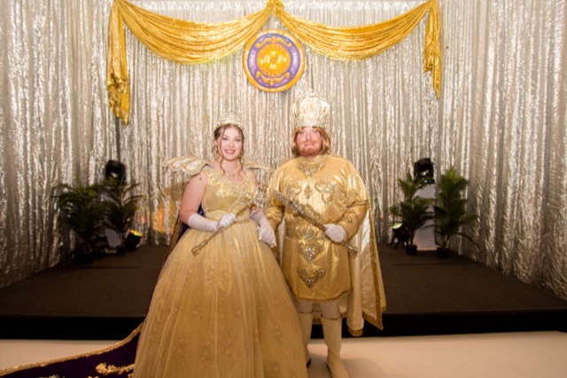
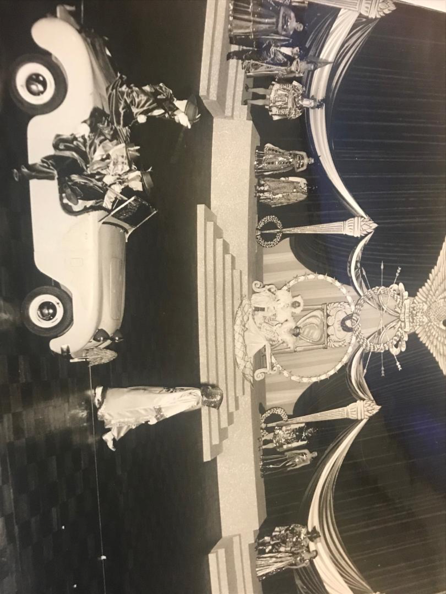

The Krewe of Janus is a non-parading organization founded in Algiers in 1948 by several friends who had all returned from the war. Janus staged its first ball at the Municipal Auditorium on February 20, 1949. The ball was patterned after the old-line krewes and featured a strictly formal tableau presentation of the Royal Court, a Grand March, and Masker's Dances (callouts). The early balls featured elaborate costumes that illustrated the theme of the ball. But Janus also incorporated an element of entertainment in their balls, which would become one of the krewe's trademarks. Unlike most krewes, Janus did not hire entertainers but instead featured krewe members in humorous skits depicting scenes related to the theme in its Grand Finale.
After staging successful balls in 1949 and 1950, Janus paused its activity for a few years while their members were recalled to military service. Returning in 1952, Janus chose Chase Dickey to be its Captain. Mr. Dickey filled that role for 50 years, retiring in 2002 as one of the longest serving captains in local Carnival circles. Chuck Dickey, his son, then took over as captain.
 





Ball dates were assigned in the Auditorium according to seniority and as a result, Janus and many others staged their balls on a weeknight. With a 9:00 P.M. start time, and a breakfast downtown following the ball, the event extended well into the morning, which was problematic for some members and guests. To secure a weekend ball date, Janus left the Auditorium in 1987 and moved to a downtown hotel where the ball has been staged ever since.
Formerly a West Bank-based group, today's members of Janus come from a variety of communities in several states. And though their addresses may have changed, many of the names have remained the same, as the sons and grandsons populate the krewe. And this year's Janus ball will look remarkably similar to those from the early years. Recent finales were inspired by Bruno Mars, Michael Jackson, Queen, and Disney Princesses. Satire rules the skits, which have skewered public officials, billboard lawyers, and the Sewerage and Water Board. One never knows what to expect at a Janus ball.
Chuck Dickey stepped down as Captain after 14 years in 2023, and combined he and his father directed the Krewe's activities for a combined 71 years.